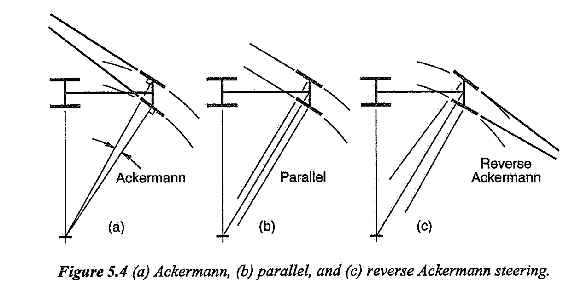
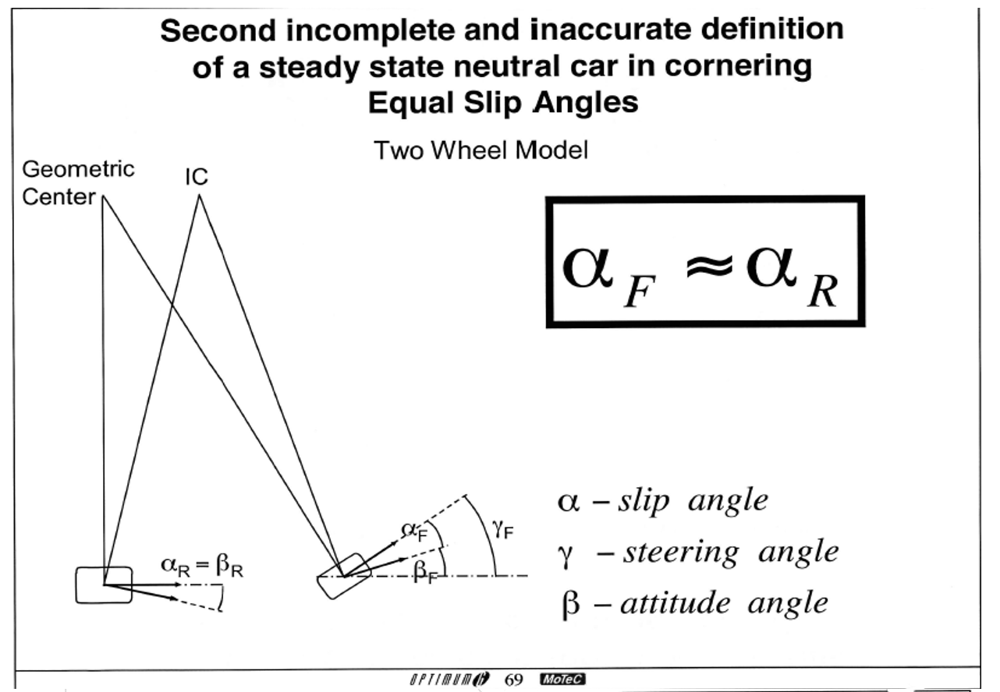
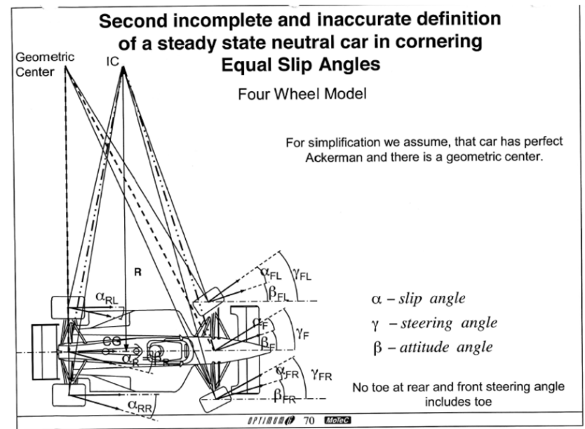
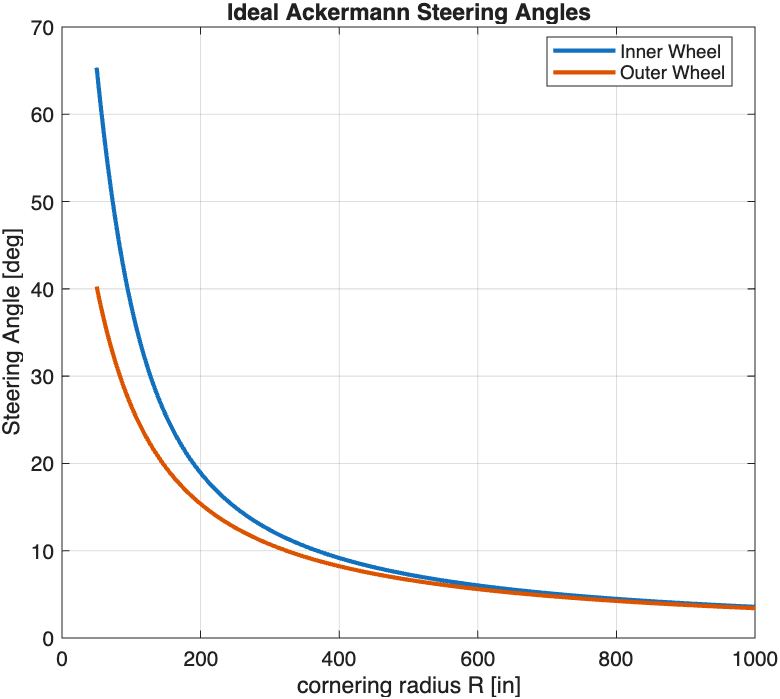
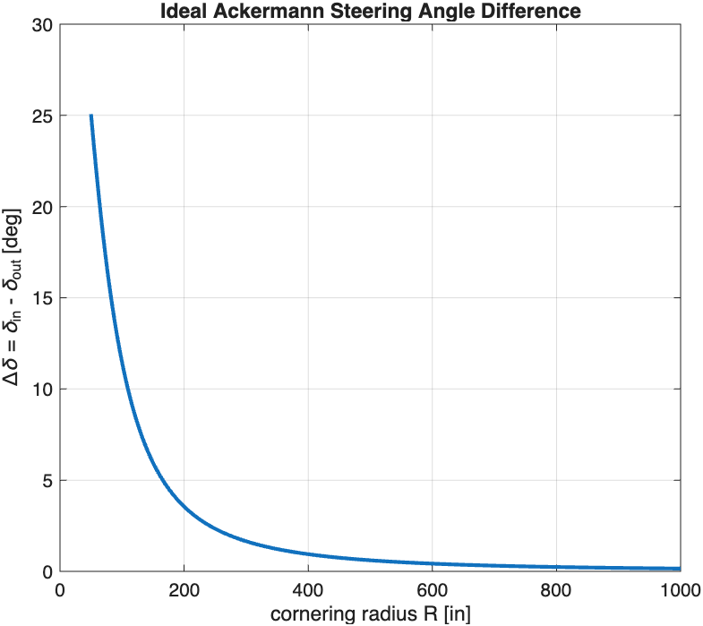
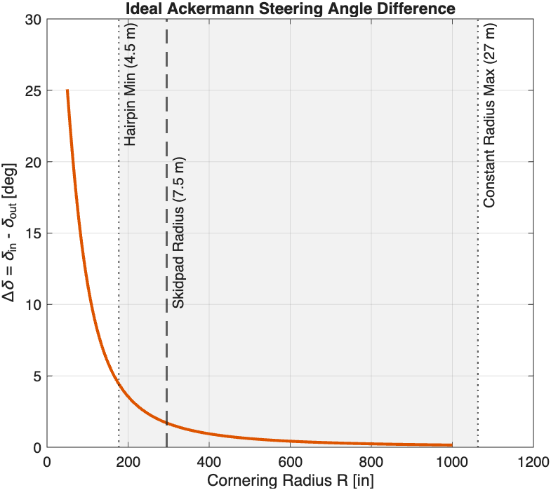
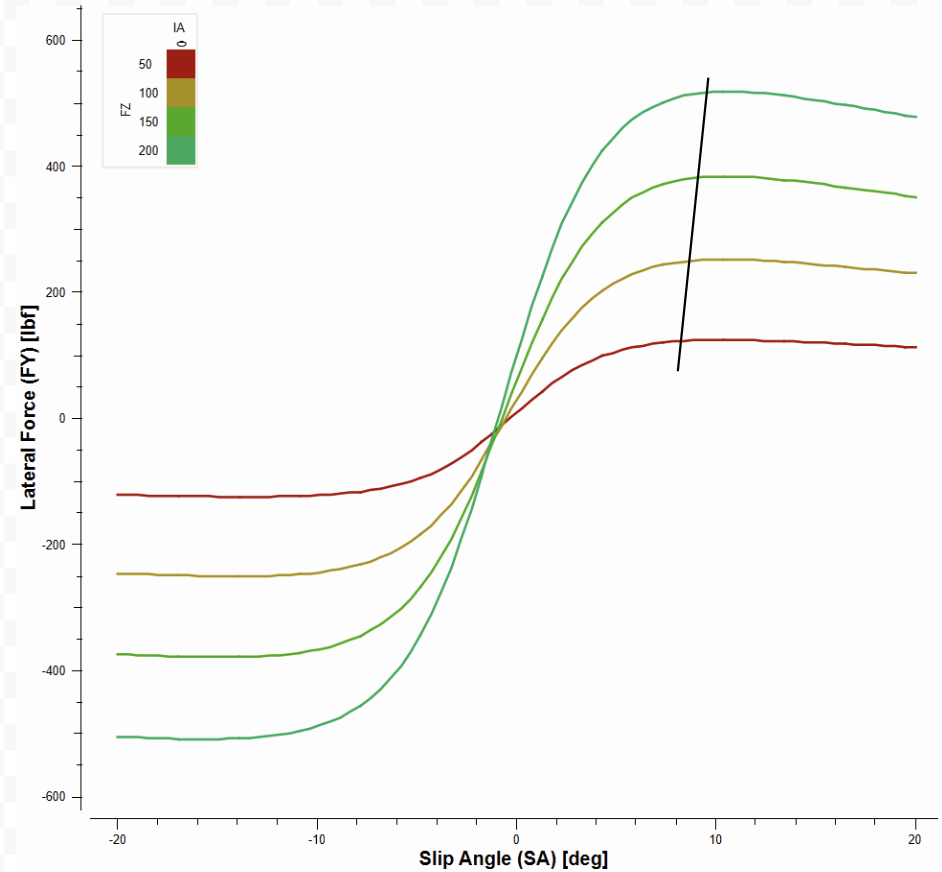

0Introduction
The goal is to determine what Ackermann geometry we should design our car to. This document outlines the methodology used on ARG27 to determine an Ackermann percentage.
1Background
1.1What is Ackermann?
Ackermann steering describes the relationship between the steering angles of the inside and outside front tires during a turn.

1.2Defining Our Model and Variables
The analysis models the car in steady-state cornering at a cornering radius R.
- Steering angle, δ
- The angle between the vehicle's x-axis and the wheel plane.
- Attitude (sideslip) angle, β
- The angle between the vehicle's x-axis and the velocity vector at a specified point. In a bicycle model, we introduce the front and rear attitude angles βF and βR (see Figure 2). In a full-car model, we introduce four attitude angles, βFL, βFR, βRL, βRR, one for each corner (see Figure 3).
- Slip angle, α
- The angle between the wheel plane and the wheel's velocity vector. In a bicycle model, we introduce the front and rear slip angles αF and αR (see Figure 2). In a full-car model, we introduce four slip angles, αFL, αFR, αRL, αRR, one for each corner (see Figure 3).


2Pure Ackermann (No Slip)
We still assume steady-state cornering, now with zero slip angle at every tire. Purely geometrically, the inner and outer tires travel on different radii, so to have no slip they must be steered to different angles. These angles can be calculated from the geometry as follows, where L is the wheelbase, T is the track width, and R is the cornering radius.
Inner wheel steering angle
Outer wheel steering angle
Since L and T are fixed by the vehicle architecture, the only variable that affects the steering angles is the cornering radius R.

Both steering angles decrease as the cornering radius increases. This makes intuitive sense, since a wider turn needs less steering. Because we are interested in Ackermann, the difference between the inner and outer steering angles, we take the difference:
Ackermann steering angle difference

The steering angle difference decreases quickly as the cornering radius increases and approaches 0. This graph may suggest that Ackermann varies a lot with cornering radius. First, though, we should specify the range of cornering radii the car typically operates in. The minimum and maximum values are taken from Endo's report.

The takeaway from this graph is that, still assuming no slip, the steering angle difference for pure Ackermann ranges from 0° to 5°.
3Incorporating Slip Angles
Section 2 determined the required steering angles assuming all four tires have zero slip angle. This condition is useful for establishing the geometric Ackermann baseline, but it does not accurately represent a race car at significant lateral acceleration. To generate lateral force, a tire generally operates at a nonzero slip angle.
We now introduce αin and αout to represent the slip angles of the inside and outside tires.

| Slope Condition | Tire Behavior | Required Geometry Impact |
|---|---|---|
| Positive SlopePeak slip angle increases with load | The heavily loaded outside tire needs a higher slip angle than the lightly loaded inside tire. | Demands Reverse (Anti-) Ackermann: You must steer the outside wheel more than the inside wheel. This is common in high-downforce racing like Formula 1. |
| Negative SlopePeak slip angle decreases with load | The lightly loaded inside tire needs a higher slip angle than the outside tire to reach its peak grip. | Demands Positive Ackermann: You must steer the inside wheel more than the outside wheel. This matches traditional low-speed geometric Ackermann. |
| Zero SlopePeak slip angle is independent of load | Both tires reach their maximum cornering capacity at the exact same slip angle regardless of weight transfer. | Demands Parallel Steering: Both wheels should be steered at identical angles relative to the chassis to track optimally. |
Peak grip here stays around the same slip angle, which influences us to go for more parallel steering.
4Ackermann Kinematics
4.1Defining % Ackermann
Evaluated at the same average steer angle
- 100% = pure Ackermann (Section 2)
- 0% = parallel
- Negative = reverse Ackermann
4.2How the Linkage Sets Ackermann
Ackermann is set by the plan-view geometry of the steering links:
- the outboard steering pickup on the upright relative to the steering axis;
- the steering rack's fore-aft position and height.
A real linkage does not give a constant %. It changes with steer angle, so it must be checked across the full steering range in OptimumKinematics.
5Case Analysis
To be filled out.
6Ackermann Impact on Understeer
To be filled out.
7References
- Racecar Engineering, "Tech Explained: Ackermann Steering Geometry." racecar-engineering.com
- W. F. Milliken and D. L. Milliken, Race Car Vehicle Dynamics, SAE, 1995: Ch. 5 (pp. 128–137, Figs. 5.4, 5.16), §19.2 (pp. 714–716).
- M. Endo, ARG13 Suspension Technical Report, Cornell Racing, Spring 2013.
- S. Munver, ARG26 Suspension System Design Technical Report, Cornell Racing, Fall 2025.
- FSAE Tire Test Consortium, Round 9 data, Calspan, January 2022.